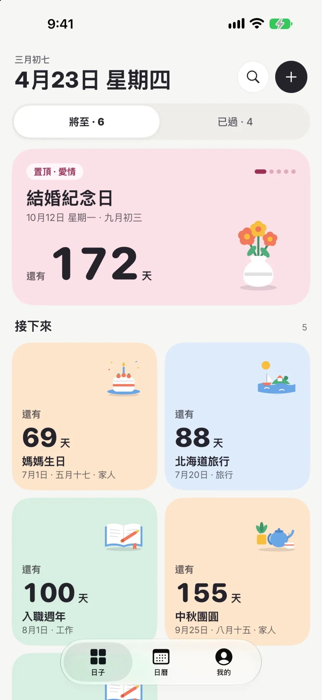
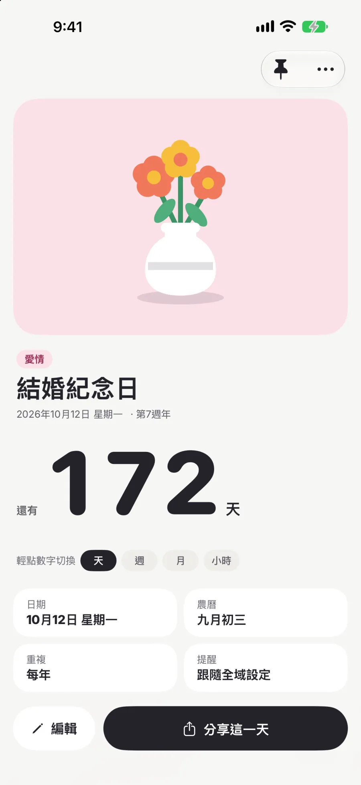
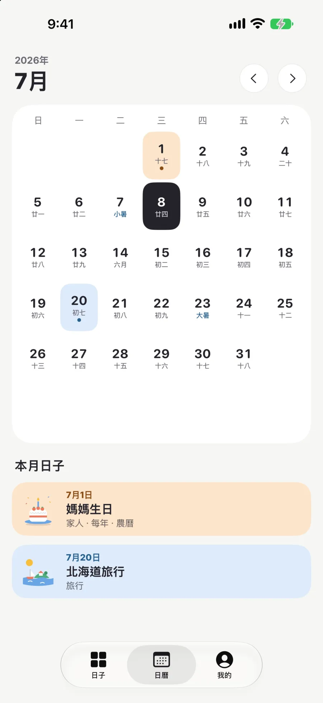
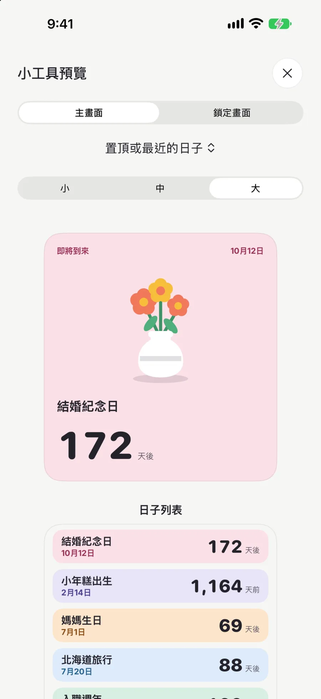
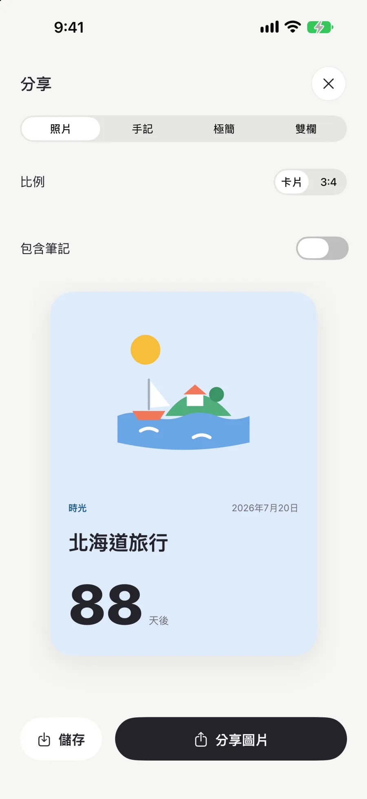
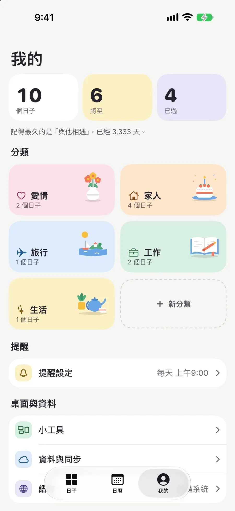
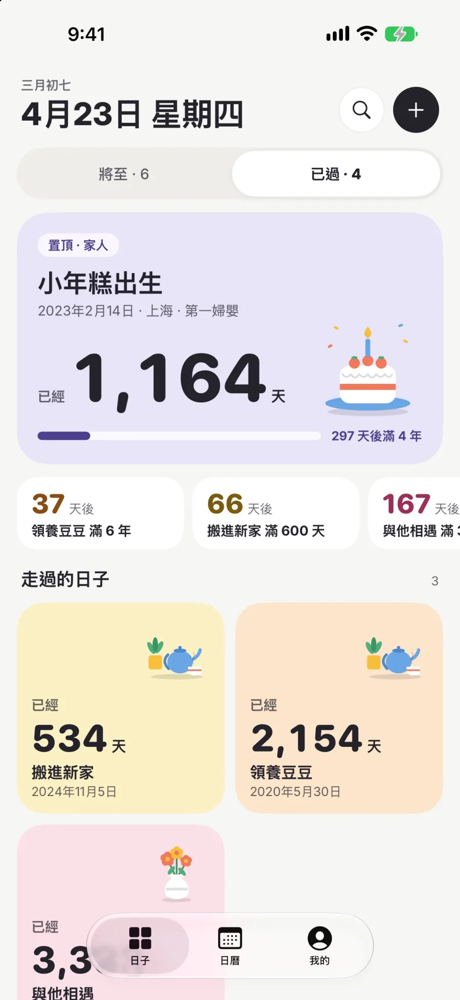

時光溫柔記住每一個重要的日子
結婚紀念、家人慶生、期待已久的旅行、全力以赴的考試……將至的日子值得期盼，走過的時光值得回望。

試一試
離那一天，還有多少天？
寫下一個名稱與日期，看看時光如何為你細數。

—
功能
把記掛的日子放在手邊，溫柔提醒，從容相聚
-

將至與已過
「將至」為你倒數未到的日子，置頂與近期事項一目了然；每年重複的日子剛過完，還會在首頁停留一週，留給你寫下當時的心情。只發生一次的日子，則在跨過當天後歸入「已過」，陪你一天天累積走過的時光。
2面
-

整數紀念
走過的日子，每一步都算數。「已過」會自動預告下一個整數里程碑：千日之內每滿 100 天、千日之後每滿 500 天，以及每一個整年。
100天、500 天或一整年
-

農曆與節氣
生日與紀念日可按國曆或農曆每年重複。內建 1900 至 2100 年完整農曆，日曆中清晰標註農曆日期、二十四節氣與傳統佳節。
24個節氣
-

輕點切換單位
在詳情頁輕點數字，即可在天、週、月、小時之間切換視角。下方的時間軸還會串聯起過往與未來的關鍵節點——無論是上一次與下一次週年，還是即將到來的整數紀念。
4種單位
-

貼心提醒
支援提前 7 天、3 天、1 天及當天提醒，提醒時間自由設定。還可開啟「每日問候」與過往日子的年度「時光回憶」，在恰當的時刻輕聲喚起記憶。
7 · 3 · 1天前提醒
-
封面插圖
每個日子都有柔和的分類底色。你可以換上自己珍藏的照片，或從 12 幅扁平插圖中挑一張相配；新建日子時，也會依分類為你自動配好封面。
12張插圖
-

小工具
主畫面提供小、中、大尺寸的柔彩卡片與多日列表，鎖定畫面另有三種精巧樣式；單日小工具可指定任意日子，或自動顯示置頂與近期事項。你還可以從控制中心一鍵新增日子，或隨時問 Siri 離某一天還有多久。
8種樣式
-

分享卡片
提供照片、手記、極簡、雙欄四種版式，支援按卡片原尺寸或 3:4 直圖匯出。心情筆記預設隱藏，由你決定是否一同分享。
4種範本
-

自訂分類
除了預設的愛情、家人、旅行、工作與生活，你還可以在「我的」中建立專屬分類，自由搭配喜歡的圖示與柔和色彩。
5種顏色
-

iCloud 同步
可透過你個人的 iCloud 在多台裝置間同步日子、分類與照片，也可選擇僅儲存在本機。誤刪的日子會在每台裝置上保留 30 天，隨時可以找回。
30天內可還原


介面一覽
柔和清爽，一眼看清重要時刻






0